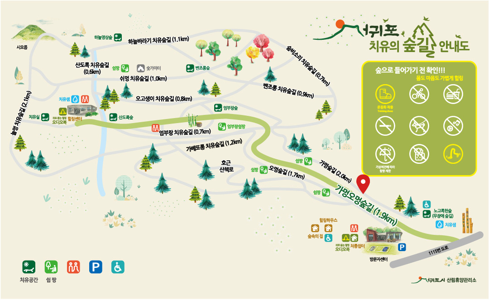

치유의 숲 안내도



가멍오멍 숲길(1.9km)
치유공간 쉼팡 치유샘- · 치유공간 : 노고록숲('편안한'이라는 의미의 제주어) 유니버설 디자인, 무장애 데크시설로 누구나 이용가능한 숲길 870m
- · 쉼팡 : 쉬는곳 마을힐링해설사의 이야기를 듣는 공간
가베또롱 치유숲길(1.2km)
- · 가베또롱 : '가뿐한, 가벼운' 이라는 의미의 제주어
- · 잣성을 옆에 두고 따라 걷는 이길은 제주의 옛이야기가 솔솔 들려온다.
벤조롱 치유숲길(0.9km)
치유공간- · 벤조롱 : '산뜻한, 멋진' 이라는 의미의 제주어
- · 계곡길이 많으며 녹생의길, 이끼의 푸름이 몸과 마음에 싱그러운 상쾌함을 가져다 주는 숲길
- · 치유공간 : 벤조롱 숲(편백나무의 피톤치드를 느낄 수 있음)
숨비소리 치유의숲길(0.7km)
- · 숨비소리 : 해녀의 활동 중 잠수 한 뒤 물 밖으로 나와서 내뱉는 숨소리
- · 붉가시나무의 군락으로 봄에는 숲바닥에 떨어진 상록수의 낙엽을 볼 수 있고 가을, 겨울에 걸쳐 도토리를 주워 만져볼 수 있는 독특한 숲길
오고생이 치유숲길(0.8km)
치유공간- · 오고생이 : '있는 그대로'라는 의미의 제주어
- · 예로부터 활용된 돌길이 주는 고즈넉함이 보존된 숲길
- · 치유공간 : 오고생이숲(호흡, 나무 안아보기, 숲 향기, 손 마사지)
쉬멍 치유숲길(1.0km)
쉼팡 숯가마터- · 쉬멍 : '쉬면서'라는 의미의 제주어
- · 가을의 정취를 느낄 수 있는 단풍나무 군락이 있는 숲길
- · 붉가시나무의 떼굴떼굴 도토리가 가득한 숲길
엄부랑 치유숲길(0.7km)
치유공간 쉼팡 화장실- · 엄부랑 : '엄청난, 큰' 이라는 의미의 제주어
- · 거대한 삼나무 군락지로 숲의 신비로움과 호기심을 가지고 누구나 쉽게 걸을 수 있는 숲길
- · 치유공간 : 엄부랑숲(가족 치유 프로그램 공간)
산도록 치유숲길(0.6km)
치유공간- · 산도록 : '시원한' 이라는 의미의 제주어
- · 돌계단과 계곡을 끼고 있으며 음이온이 가득한 숲길
- · 치유공간 : 산도록숲(오감열기, 숲속 야외공연, 산림교육, 맨발족욕 등)
놀멍 치유숲길(2.1km)
- · 놀멍 : '놀면서' 라는 의미의 제주어
- · 시오름 정상에 올라 아름다운 한라산의 모습을 볼 수 있다.
하늘바라기 치유숲길(1.1km)
치유공간- · 푹신하고 완만한 경사로로 낙엽수림과 삼나무, 편백나무 숲의 다양한 경관을 느낄 수 있는 숲길
- · 치유공간 : 하늘명상숲(정적인 활동, 복식호흡, 명상)
힐링센터
치유공간 치유샘 화장실- · 힐링센터는 주로 산림치유프로그램을 진행하기 위한 공간 (사전예약)
- · 치유실(편백열치유실), 다담실(차를 마시며 나눔과 마무리를 하는 공간) 등 산림치유프로그램을 운영 (사전예약)
- · 건강측정실은 자율신경계/스트레스/혈압을 측정하여 산림치유프로그램에 적용하는 공간입니다. (사전예약)
- · 숲길힐링프로그램에 참여하신 분들은 힐링센터 내 건강측정실에서 잠시 쉬어갈 수 있습니다. (혈압 또는 체중 측정 가능)